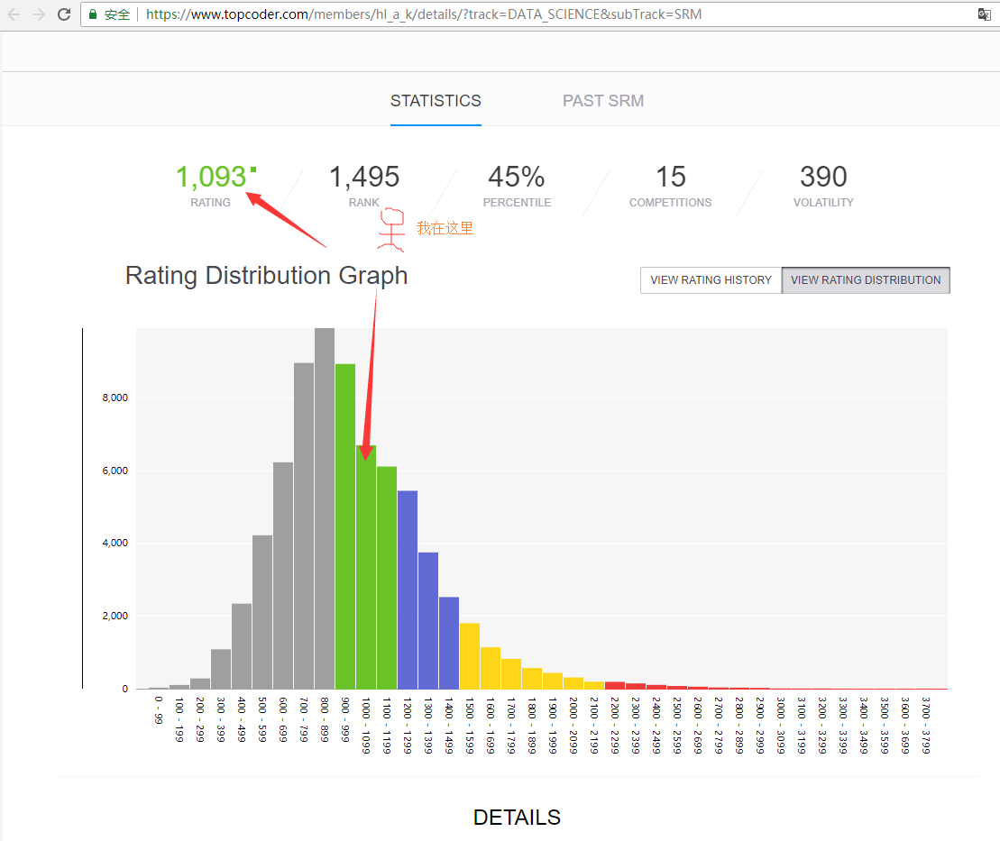

聚焦编程竞赛, 助力学生走上成功大道
为什么要参加编程竞赛？
名校直接录取
随着人工智能的进步， 越来越多的职业将被计算机取代。 现在的金饭碗，比如律师、会计、医生也不能幸免。学习编程是最好的选择
目前学校的教材还是相对落后， 编程相关的内容偏少。 如果让学生在初高中参加编程培训，可以学生先人一步
在国际化的编程比赛中获奖(google每年举办的编程比赛，topcoder经常举办的编程比赛)，可以获得google FB等公司的offer.
宝马觅伯乐
编程竞赛培训很难， 并不是随便什么人就可以做的，我是否能胜任？
我在初中时，有拿的过全国奥市第一名的名次。但这个年代有点久远了。
现在，我有在
topcoder
上刷题。
这里可以看我的参赛信息

我的竞赛水平和扎克伯格差不多
合作共赢， 共筑未来
你有学校 我有能力 我们有市场